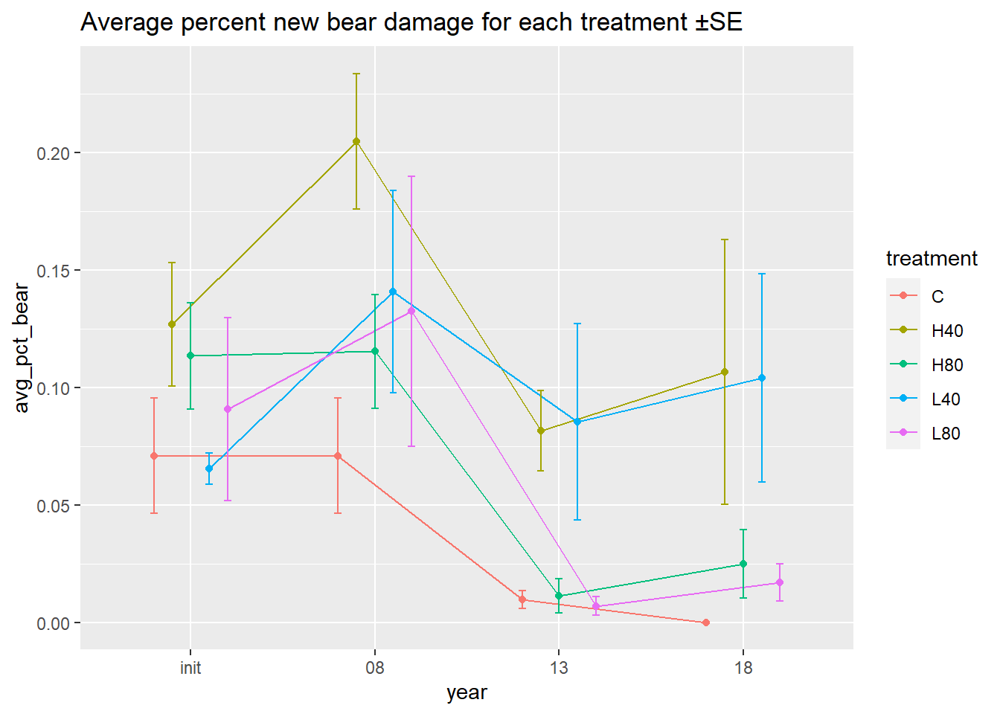
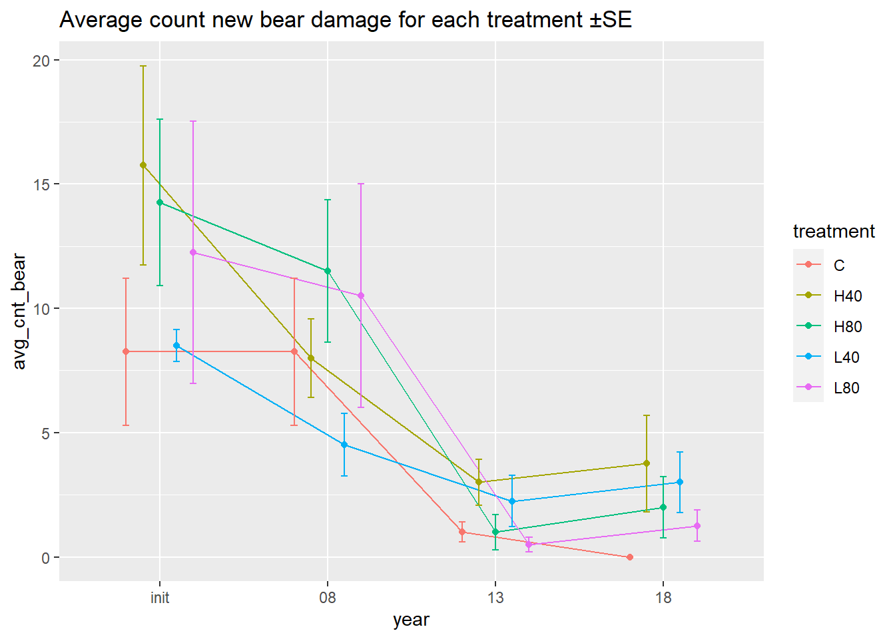

Bear and other damage
require(tidyverse)
library(performance)Bear damage
data cleaning
I’ll only consider live trees.
bd <- d_l %>%
filter(live) %>%
mutate(year = factor(year, ordered = FALSE)) %>%
select(-c(h_dist, azi, x, y, cc, live, ht))There are trees with “healed over” in the notes, most of these are in 2008. It makes sense if these trees are subsequently listed as not bear damaged.
I’m assuming that any tree that goes from bear damaged in 2008 to not bear damaged in 2013 is in fact healed and that any damage in 2018 is new damage.
# # Use this to look at any "healed" trees
# bd %>%
# group_by(tree_id) %>%
# filter(any(str_detect(tolower(notes), "healed"))) %>%
# color_groups()In looking at notes, trees trees that have “old bear damage” recorded are treated inconsistently, some are recorded with bear damage, some without. I’ll assume that trees recorded as not bear damaged are either undamaged or completely healed, and subsequent damage implies a new bear incidence of bear damage.
# # Use this to look at any "old bd" trees
# bd %>%
# group_by(tree_id) %>%
# filter(any(str_detect(tolower(notes), "old"))) %>%
# color_groups()Are there trees that are recorded as bear damaged in one period and then not in the next period? Put another way, are bear damaged trees dropped from the list for one reason or another?
There are 64 trees that are dropped (all in 2013), of these, 14 are subsequently listed as damaged (all in 2018). As stated above, I will consider these valid occurrences of new damage.
bear_dropped <- bd %>%
group_by(tree_id) %>%
mutate(bear_dropped = lag(bear) & !bear) %>%
filter(any(bear_dropped)) %>%
mutate(id = cur_group_id()) %>%
relocate(id) %>%
arrange(id)
# # all dropped bear damage trees occur in 2013
# filter(bear_dropped, bear_dropped) %>% pull(year) %>% unique()
# color_groups(bear_dropped)
# # trees that are re-attacked
# bear_dropped %>%
# filter(any(bear & !lag(bear))) %>%
# mutate(id = cur_group_id(), .before = 1) %>%
# color_groups()I need to create another variable which indicates if the damage is new for that period, when a trees goes from undamaged to damaged. I will also count trees as new bear damage when the damage increases from one period to the next ie. when condition code increases from 17 or 18 to 19 or 20.
I’ll also add a variable indicating whether a tree was damaged in 2013
# this was used for ensuring all bear damage stuck with a tree throughout its life
# I've since decided to allow trees to "completely heal," as the data seems to suggest this
cum_logic <- function(x) {
if (any(x)) {
idx <- min(which(x))
x[idx:length(x)] <- TRUE
}
return(x)
}
bd <- bd %>%
group_by(tree_id) %>%
mutate(
bear_mag = as.numeric(get_cond(17, 18, 19, str = TRUE)),
bear_new = bear & year %in% c("init", "08") | bear & !lag(bear) | bear_mag > lag(bear_mag),
bear_new = if_else(is.na(bear_new), FALSE, bear_new),
bear_cum = if_else(year == "18" & lag(bear_new), TRUE, bear_new),
) %>%
select(-bear_mag) %>%
ungroup()I’m going to drop alder and hemlock, because they are never attacked by bear. I am also dropping spruce in order to be consistent with the rest of my analysis.
There were about 30 spruce trees before thinning and about half of these had bear damage. In 2013, there were 24 spruce and 4 of them received damage.
bd <- filter(bd, spp %in% c("SESE3", "PSMEM")) %>%
mutate(spp2 = spp)Summary
Here is percent new bear damage over time. The H40 and L40 treatments seem to have the largest increases.
In the H40 treatment there is a decline in percent new bear damage in two plots, whereas for the L40 treatment, only one declines, and it is anomalous in that is the only plot that sees an increase from 2008 to 2013.
Error bars represent 1 SE of mean
bear_plot <- function(data, var) {
my_dodge = position_dodge(width = 0.5)
ggplot(data, aes(year, {{var}}, color = treatment, group = treatment)) +
geom_line(position = my_dodge) +
geom_point(position = my_dodge) +
geom_errorbar(aes(ymin = {{var}} - se, ymax = {{var}} + se), width = 0.2, position = my_dodge)
}
bd %>%
# filter(year != "init") %>%
group_by(year, treatment, plot) %>%
summarize(pct_bear = sum(bear_new, na.rm = TRUE) / n()) %>%
summarize(avg_pct_bear = mean(pct_bear), se = sd(pct_bear) / sqrt(n()) ) %>%
bear_plot(avg_pct_bear) +
labs(title = "Average percent new bear damage for each treatment ±SE")
bd %>%
# filter(year != "init") %>%
group_by(year, treatment, plot) %>%
summarize(cnt_bear = sum(bear_new, na.rm = TRUE)) %>%
summarize( avg_cnt_bear = mean(cnt_bear), se = sd(cnt_bear) / sqrt(n()) ) %>%
bear_plot(avg_cnt_bear) +
labs(title = "Average count new bear damage for each treatment ±SE")
Here is the same data for individual plots, showing their trajectories
bd_plot_fig <- function(prop = FALSE) {
my_sum <- function(d) summarise(d, var = sum(bear_new))
lab_word <- "Count"
if (prop) {
my_sum <- function(d) summarise(d, var = sum(bear_new) / n())
lab_word <- "Proportion"
}
bd %>%
group_by(year, treatment, plot) %>%
my_sum %>%
ggplot(aes(year, var, color = treatment, group = plot)) +
geom_line(position = position_dodge(width = 0.4), size = 1, alpha = 0.6) +
facet_wrap(~ treatment) +
theme(legend.position = "none") +
geom_point(position = position_dodge(width = 0.4)) +
scale_x_discrete(expand = expansion(mult = 0.2)) +
labs(
title = paste(lab_word, "new bear damage for each treatment and plot"),
y = lab_word
)
}
bd_plot_fig()
bd_plot_fig(prop = TRUE)
Bear bar charts
basic_bear_bar <- function(cum, prop) {
var <- quote(bear_new)
if (cum) var <- quote(bear_cum)
my_sum <- function(d) summarise(d, var = sum(eval(var)))
if (prop) my_sum <- function(d) summarise(d, var = sum(eval(var)) / n())
calc <- if_else(prop, "Proportion ", "Count ")
variable <- if_else(cum, "cumulative ", "")
group_by(bd, treatment, year, spp2) %>%
my_sum %>%
ggplot(aes(treatment, eval(var), fill = spp2)) +
geom_col(position = "stack", color = "black") +
facet_wrap(~ year, nrow = 1) +
scale_fill_manual(values = palette()) +
labs(
title = paste0(calc, "of ", variable, "new bear damage"),
y = calc,
x = "Treatment",
fill = NULL
)
}
basic_bear_bar(cum = TRUE, prop = FALSE)
basic_bear_bar(cum = TRUE, prop = TRUE)
Bear bar chart for publication
year_labels <- c(
init = "Pretreatment damage\nbefore thin",
`08` = "Pretreatment damage\nafter thin",
`13` = "Posttreatment damage\n2008 - 2013",
`18` = "Posttreatment damage\n2008 - 2018"
)
type_labels <- as_labeller(c(
bear_cnt = "Count~(stems^-1)",
bear_prop = "Proportion"
), label_parsed)
bd_2 <- group_by(bd, treatment, spp2, year)
bd_2 <- bind_rows(
bear_cnt = summarise(bd_2, bear_sum = sum(bear_cum)),
bear_prop = summarise(bd_2, bear_sum = sum(bear_cum) / n()),
.id = "sum_type"
) %>% relevel_treatment()
bd_2 %>%
ggplot(aes(treatment, bear_sum, fill = spp2)) +
geom_col(position = "stack") +
facet_grid(
sum_type ~ year,
scales = "free_y",
switch = "y",
labeller = labeller(sum_type = type_labels, year = year_labels)
) +
theme_bw() +
theme(
axis.title.y = element_blank(),
strip.placement = "outside",
strip.background.y = element_blank(),
legend.position = c(.91, .86),
legend.title = element_blank(),
legend.background = element_blank(),
axis.text.x = element_text(vjust = 0, angle = -45)
) +
scale_fill_manual(
values = c("#969696", "black"),
labels = c("Douglas-fir", "Redwood")
) +
scale_y_continuous(expand = c(0.0, 0, 0.08, 0)) +
labs(x = "Treatment")
ggsave(
filename = "figs/bd_summary.pdf",
device = cairo_pdf,
width = 18.2,
height = 9,
units = "cm"
)
ggsave(
filename = "figs/be_summary.jpg",
width = 18.2,
height = 9,
units = "cm"
)Modeling
There are several potential to modeling this data.
Probability of bear damage could be modeled as binary data with a generalized linear model binomial regression with logit link (logistic regression). This, I think would be answering: for a random (average?) tree from a given treatment, what is the probability that it would be bear damaged? I’m not sure we have sufficient observations of damaged trees characterize the distribution. In the case of prediction, we may need to make adjustment for the imbalance of response
Another approach is modeling percent bear damage at the plot level. Here linear regression may work, but theoretically, our response is bound by (0, 1). One recommendation here is Beta regression.
Also at the plot level, we could model counts using Poisson or negative binomial GLMM. This would answer the question: how many trees can we expect to be bear damaged given a treatment. Here it would probably be important to account for differences between treatments like diameter increment and tree size.
Logistic regression
We are modeling occurrence of new bear damage in 2013 and 2018. New bear damage in 2008 is not really comparable as it represents accumulated damage over an unspecified amount of time prior to treatment.
My first model is additive and includes treatment,
year, d_inc2, spp2 and random
slopes for plot, and tree_id.
The random effects for tree_id are very small, these
might end up getting dropped.
bdmd <- subset(bd, year %in% c("13", "18")) %>%
mutate(year = factor(year))
bm1 <- glmer(
bear_new ~ treatment + year + d_inc2 + spp2 + (1 | plot) + (1 | tree_id),
family = binomial,
data = bdmd
)## Warning in checkConv(attr(opt, "derivs"), opt$par, ctrl = control$checkConv, : Model failed to converge with max|grad| = 0.00254843 (tol = 0.002, component 1)summary(bm1)## Generalized linear mixed model fit by maximum likelihood (Laplace Approximation) ['glmerMod']
## Family: binomial ( logit )
## Formula: bear_new ~ treatment + year + d_inc2 + spp2 + (1 | plot) + (1 | tree_id)
## Data: bdmd
##
## AIC BIC logLik deviance df.resid
## 470.6 528.7 -225.3 450.6 2438
##
## Scaled residuals:
## Min 1Q Median 3Q Max
## -0.9134 -0.1523 -0.0594 -0.0430 30.2505
##
## Random effects:
## Groups Name Variance Std.Dev.
## tree_id (Intercept) 3.595e-06 0.001896
## plot (Intercept) 9.947e-02 0.315396
## Number of obs: 2448, groups: tree_id, 1294; plot, 20
##
## Fixed effects:
## Estimate Std. Error z value Pr(>|z|)
## (Intercept) -6.9011 0.6398 -10.786 < 2e-16 ***
## treatmentH40 1.9912 0.6178 3.223 0.001267 **
## treatmentH80 0.5098 0.6331 0.805 0.420658
## treatmentL40 2.2874 0.6247 3.661 0.000251 ***
## treatmentL80 0.3528 0.6761 0.522 0.601744
## year18 0.5289 0.2720 1.945 0.051822 .
## d_inc2 0.7044 0.2633 2.675 0.007465 **
## spp2SESE3 2.3877 0.3779 6.317 2.66e-10 ***
## ---
## Signif. codes: 0 '***' 0.001 '**' 0.01 '*' 0.05 '.' 0.1 ' ' 1
##
## Correlation of Fixed Effects:
## (Intr) trtH40 trtH80 trtL40 trtL80 year18 d_inc2
## treatmntH40 -0.657
## treatmntH80 -0.638 0.734
## treatmntL40 -0.696 0.762 0.716
## treatmntL80 -0.633 0.683 0.659 0.670
## year18 -0.270 0.031 0.001 0.033 0.002
## d_inc2 -0.147 -0.223 -0.056 -0.151 -0.028 -0.047
## spp2SESE3 -0.443 -0.042 -0.084 0.031 -0.032 0.033 -0.109
## optimizer (Nelder_Mead) convergence code: 0 (OK)
## Model failed to converge with max|grad| = 0.00254843 (tol = 0.002, component 1)check allFit output to see if this model can be
considered reliable: The estimated coefficients are very congruent, I
think we can trust this model.
bm1.all <- allFit(bm1)## bobyqa : [OK]
## Nelder_Mead : [OK]
## nlminbwrap : [OK]
## nmkbw : [OK]
## optimx.L-BFGS-B : [OK]
## nloptwrap.NLOPT_LN_NELDERMEAD : [OK]
## nloptwrap.NLOPT_LN_BOBYQA : [OK]summary(bm1.all)$fixef## (Intercept) treatmentH40 treatmentH80 treatmentL40 treatmentL80 year18 d_inc2 spp2SESE3
## bobyqa -6.901056 1.991354 0.5098966 2.287555 0.3527695 0.5289334 0.7041794 2.387779
## Nelder_Mead -6.901244 1.991535 0.5101163 2.287773 0.3530073 0.5289660 0.7041613 2.387763
## nlminbwrap -6.901057 1.991365 0.5098965 2.287560 0.3527662 0.5289365 0.7041867 2.387764
## nmkbw -6.901210 1.991552 0.5101248 2.287759 0.3528862 0.5290002 0.7040826 2.387750
## optimx.L-BFGS-B -6.901063 1.991389 0.5099195 2.287576 0.3527855 0.5289183 0.7041884 2.387755
## nloptwrap.NLOPT_LN_NELDERMEAD -6.900983 1.991237 0.5097061 2.287448 0.3525965 0.5288553 0.7041666 2.387926
## nloptwrap.NLOPT_LN_BOBYQA -6.896602 1.986645 0.5062966 2.283225 0.3422869 0.5295844 0.7037227 2.388498This model seems to be working. Now I’ll do more model selection,
testing for interactions. All of these models will include
plot as the only random effect. I compare performance
metrics using the R package: performance (Lüdecke
et al. 2021)
fl <- list(
bear_new ~ treatment + year + spp2 + d_inc2
, bear_new ~ treatment + year + spp2 + scale(ba_inc2)
, bear_new ~ treatment + year + spp2 + d_inc2 + year:spp2
, bear_new ~ treatment + year + spp2 + scale(ba_inc2) + year:spp2
, bear_new ~ treatment + year + spp2 + scale(ba_inc2) + year:spp2 + treatment:year
, bear_new ~ treatment + year + spp2 + d_inc2 + treatment:spp2
, bear_new ~ treatment + year + spp2 + scale(ba_inc2) + treatment:spp2
, bear_new ~ treatment + year + spp2 + d_inc2 + treatment:year
, bear_new ~ treatment + year + spp2 + scale(ba_inc2) + treatment:year
, bear_new ~ treatment + year + spp2 + d_inc2 + spp2:d_inc2
, bear_new ~ treatment + year + spp2 + scale(ba_inc2) + spp2:scale(ba_inc2)
, bear_new ~ treatment + year + spp2 + scale(ba_inc2) + year:spp2 + spp2:scale(ba_inc2)
, bear_new ~ treatment + year + spp2 + d_inc2 + year:spp2 + d_inc2:spp2
)
names(fl) <- seq_along(fl)
make_glmm_mods <- function(dat, fl, w_tree = FALSE){
ran <- "~ . + (1 | plot)"
if (w_tree) ran <- paste(ran, "+ (1 | tree_id)")
eval(bquote(
lapply(fl, \(x) {
form <- update(x, ran)
print(paste("Evaluating: ", deparse1(x)))
glmer(
form,
family = binomial(),
data = .(substitute(dat)),
control = glmerControl(optimizer = "bobyqa", optCtrl = list(maxfun=2e7))
)
})
))
}
make_bglmm_mods <- function(dat, fl, w_tree = FALSE){
ran <- "~ . + (1 | plot)"
if (w_tree) ran <- paste(ran, "+ (1 | tree_id)")
out <- eval(bquote(
lapply(fl, function(x) {
mod0 <- glm(x, data = dat)
print(paste("Evaluating: ", deparse1(x)))
n_coef <<- length(coef(mod0))
form <- update(x, ran)
blme::bglmer(
form,
family = binomial(),
data = .(substitute(dat)),
fixef.prior = normal(cov = diag(9, n_coef)),
control = glmerControl(optimizer="bobyqa", optCtrl = list(maxfun=2e7))
)
})
))
rm(n_coef, pos = .GlobalEnv)
return(out)
}Here is the list of models that I am going to test. They include
different interaction terms. In addition, I can include
tree_id as a random effect or not. Preliminary trials,
showed that models were unstable when including this term. Within
subject (tree_id) variance is perfectly correlated with
outcome because most trees that are damaged are only damaged once. This
seems to show up in the model as with tree_id absorbing
most of the variance.
There are also problems with complete separation, which I attempt to
fix by using a bayesian framework. I tried using penalized regression
with a fixed effects only glm (bias reduction). I also tried a bayesian
model and specified a prior
variance for the fixed effects as a gaussian distribution with a sd of
3. Ben Bolker says
“We can use bglmer from the blme package to
impose zero-mean Normal priors on the fixed effects”
# model list
data.frame(form = sapply(fl, deparse1)) %>%
kbl2(row.names = TRUE,
caption = "Formulas testing different tree-growth variables and intereactions")| form | |
|---|---|
| 1 | bear_new ~ treatment + year + spp2 + d_inc2 |
| 2 | bear_new ~ treatment + year + spp2 + scale(ba_inc2) |
| 3 | bear_new ~ treatment + year + spp2 + d_inc2 + year:spp2 |
| 4 | bear_new ~ treatment + year + spp2 + scale(ba_inc2) + year:spp2 |
| 5 | bear_new ~ treatment + year + spp2 + scale(ba_inc2) + year:spp2 + treatment:year |
| 6 | bear_new ~ treatment + year + spp2 + d_inc2 + treatment:spp2 |
| 7 | bear_new ~ treatment + year + spp2 + scale(ba_inc2) + treatment:spp2 |
| 8 | bear_new ~ treatment + year + spp2 + d_inc2 + treatment:year |
| 9 | bear_new ~ treatment + year + spp2 + scale(ba_inc2) + treatment:year |
| 10 | bear_new ~ treatment + year + spp2 + d_inc2 + spp2:d_inc2 |
| 11 | bear_new ~ treatment + year + spp2 + scale(ba_inc2) + spp2:scale(ba_inc2) |
| 12 | bear_new ~ treatment + year + spp2 + scale(ba_inc2) + year:spp2 + spp2:scale(ba_inc2) |
| 13 | bear_new ~ treatment + year + spp2 + d_inc2 + year:spp2 + d_inc2:spp2 |
# run models
bdm1 <- make_glmm_mods(bdmd, fl)## [1] "Evaluating: bear_new ~ treatment + year + spp2 + d_inc2"
## [1] "Evaluating: bear_new ~ treatment + year + spp2 + scale(ba_inc2)"
## [1] "Evaluating: bear_new ~ treatment + year + spp2 + d_inc2 + year:spp2"
## [1] "Evaluating: bear_new ~ treatment + year + spp2 + scale(ba_inc2) + year:spp2"
## [1] "Evaluating: bear_new ~ treatment + year + spp2 + scale(ba_inc2) + year:spp2 + treatment:year"
## [1] "Evaluating: bear_new ~ treatment + year + spp2 + d_inc2 + treatment:spp2"
## [1] "Evaluating: bear_new ~ treatment + year + spp2 + scale(ba_inc2) + treatment:spp2"
## [1] "Evaluating: bear_new ~ treatment + year + spp2 + d_inc2 + treatment:year"
## [1] "Evaluating: bear_new ~ treatment + year + spp2 + scale(ba_inc2) + treatment:year"
## [1] "Evaluating: bear_new ~ treatment + year + spp2 + d_inc2 + spp2:d_inc2"
## [1] "Evaluating: bear_new ~ treatment + year + spp2 + scale(ba_inc2) + spp2:scale(ba_inc2)"
## [1] "Evaluating: bear_new ~ treatment + year + spp2 + scale(ba_inc2) + year:spp2 + spp2:scale(ba_inc2)"
## [1] "Evaluating: bear_new ~ treatment + year + spp2 + d_inc2 + year:spp2 + d_inc2:spp2"# bdm1_tree <- make_glmm_mods(bdmd, fl, w_tree = TRUE)
bbdm <- make_bglmm_mods(bdmd, fl)## [1] "Evaluating: bear_new ~ treatment + year + spp2 + d_inc2"
## [1] "Evaluating: bear_new ~ treatment + year + spp2 + scale(ba_inc2)"
## [1] "Evaluating: bear_new ~ treatment + year + spp2 + d_inc2 + year:spp2"
## [1] "Evaluating: bear_new ~ treatment + year + spp2 + scale(ba_inc2) + year:spp2"
## [1] "Evaluating: bear_new ~ treatment + year + spp2 + scale(ba_inc2) + year:spp2 + treatment:year"
## [1] "Evaluating: bear_new ~ treatment + year + spp2 + d_inc2 + treatment:spp2"
## [1] "Evaluating: bear_new ~ treatment + year + spp2 + scale(ba_inc2) + treatment:spp2"
## [1] "Evaluating: bear_new ~ treatment + year + spp2 + d_inc2 + treatment:year"
## [1] "Evaluating: bear_new ~ treatment + year + spp2 + scale(ba_inc2) + treatment:year"
## [1] "Evaluating: bear_new ~ treatment + year + spp2 + d_inc2 + spp2:d_inc2"
## [1] "Evaluating: bear_new ~ treatment + year + spp2 + scale(ba_inc2) + spp2:scale(ba_inc2)"
## [1] "Evaluating: bear_new ~ treatment + year + spp2 + scale(ba_inc2) + year:spp2 + spp2:scale(ba_inc2)"
## [1] "Evaluating: bear_new ~ treatment + year + spp2 + d_inc2 + year:spp2 + d_inc2:spp2"# bbdm_tree <- make_bglmm_mods(bdmd, fl, w_tree = TRUE)When looking at the summaries of the models that include
tree_id, they all fail to converge. I think there is a
problem with the fact that within subject variance is perfectly
correlated with our response, because trees can, in general only be
damaged in one period or the other, trees that receive damage have very
high variance, while those that do not have very low variance.
My best guess is that it doesn’t make sense to include
tree_id because of its bimodal error.
Another option could be ensuring that a tree is only damaged in one period, but here are only 3 trees that receive “new” damage in both periods. I doubt that these are having a huge effect. For the most part, trees are only damaged in one period or the other.
examine_bdmod <- function(mod, cap) {
mod_list <- do.call(compare_performance, c(mod, metrics = "common")) %>%
arrange(AIC)
if (nrow(mod_list) > 4) {
to_compare <- as.numeric(c(mod_list$Name[1:4], "2"))
} else {
to_compare <- 1:nrow(mod_list)
}
print(
mod_list %>%
kbl2(digits = 3, caption = cap)
)
print(
sjPlot::tab_model(
mod[to_compare],
show.ci = FALSE,
show.aic = TRUE,
dv.labels = paste("Formula", to_compare),
title = cap
)
)
}
examine_bdmod(bdm1, "GLMM models with random plot only")
# examine_bdmod(bdm1_tree, "GLMM models with random plot and tree_id")
examine_bdmod(bbdm, "Bayesian GLMM models with random plot only")
# examine_bdmod(bbdm_tree, "Bayesian GLMM models with random plot and tree_id")I need a function for comparing models visually, with their predictions. I think that emmeans does this, but because I can’t seem to be sure what I am predicting with emmeans, I will construct my own dataset to make predictions in order to clarify what emmeans are predicting.
I’m predicting the confidence interval using fixed effects error only. This is how emmeans does it as well. I could try including random effects variance. I followed instructions found on Ben Bolkers’ FAQ. A more accurate solution would be to produce bootstrapped predictions
pred_bd <- function(mod, limit = FALSE) {
data <- eval(summary(mod)$call[[3]])
if (limit) {
prediction_data <- data %>%
group_by(spp, treatment, year) %>%
summarize(ba_inc2 = seq(
0,
quantile(ba_inc2, 0.99),
by = 20
)) %>%
mutate(plot = NA, spp2 = spp)
} else {
ba_incs <- seq(
0,
quantile(bdmd$ba_inc2, 0.99),
by = 20
)
prediction_data <- expand.grid(
plot = NA,
spp2 = c("PSMEM", "SESE3"),
year = c("13", "18"),
treatment = c("C", "H40", "H80", "L40", "L80"),
ba_inc2 = ba_incs
)
}
if (inherits(mod, "merMod")) {
prediction_data <- cbind(
prediction_data,
bear_new = predict(mod, newdata = prediction_data, re.form = NA)
)
} else if (inherits(mod, "glm")) {
prediction_data <- cbind(
prediction_data,
bear_new = predict(mod, newdata = prediction_data, re.form = NA)
)
}
dat <- prediction_data
dmat <- model.matrix(terms(mod), dat)
pvar1 <- diag(dmat %*% tcrossprod(vcov(mod), dmat))
cmult <- 1.96
tibble(dat
, plo = dat$bear_new - cmult * sqrt(pvar1)
, phi = dat$bear_new + cmult * sqrt(pvar1)
) %>%
mutate(across(c(bear_new, plo, phi), ~ exp(.x) / (1 + exp(.x))))
}One column bear damage figure
doj <- position_dodge(width = 20)
pred_bd(bbdm[[4]], limit = TRUE) %>%
relevel_treatment() %>%
mutate(
year = recode(year, `13` = "2013", `18` = "2018"),
spp2 = recode(spp, SESE3 = "Redwood", PSMEM = "Douglas-fir")
) %>%
ggplot(aes(ba_inc2, bear_new)) +
geom_ribbon(aes(ymin = plo, ymax = phi, fill = treatment), alpha = 0.4, color = NA, position = doj) +
geom_line(aes(linetype = treatment), size = .6, position = doj) +
geom_point(aes(shape = treatment), size = 1.3, position = doj) +
# geom_linerange(aes(ymin = plo, ymax = phi, linetype = treatment), alpha = 0.5, size = 1, position = doj) +
facet_grid(spp2 ~ year, scales = "free", space = "free") +
# expand_limits(y = c(-0.01, 0.19)) +
geom_blank(data = data.frame(ba_inc2 = 0, year = "2013", spp2 = "Douglas-fir", bear_new = c(-.03, .17))) +
theme_bw() +
theme(
legend.position = c(.17, .6),
legend.title = element_blank(),
legend.background = element_blank(),
legend.key.size = unit(5, "mm")
) +
scale_fill_grey(aesthetics = c("color", "fill")) +
scale_linetype_manual(
values = c(
C40 = "solid",
L40 = "dashed",
C80 = "solid",
L80 = "dashed",
Control = "dotted"
)
) +
scale_shape_manual(
values = c(
C40 = "circle",
L40 = "triangle",
C80 = "circle open",
L80 = "triangle open",
Control = "asterisk"
)
) +
scale_y_continuous(breaks = seq(0, .8, .1)) +
labs(
y = "Proportion",
x = expression(BAI ~ cm^2 ~ year^-1),
fill = "Treatment",
shape = "Treatment",
linetype = "Treatment"
)
ggsave(
filename = "figs/bd_pred.pdf",
device = cairo_pdf,
width = 8.84,
height = 10,
units = "cm"
)
ggsave(
filename = "figs/bd_pred.jpg",
width = 8.84,
height = 10,
units = "cm"
)2-column bear damage figure
doj <- position_dodge(width = 20)
pred_bd(bbdm[[4]], limit = TRUE) %>%
relevel_treatment() %>%
mutate(
year = recode(year, `13` = "2013", `18` = "2018"),
spp2 = recode(spp, SESE3 = "Redwood", PSMEM = "Douglas-fir")
) %>%
ggplot(aes(ba_inc2, bear_new)) +
geom_ribbon(aes(ymin = plo, ymax = phi, fill = treatment), alpha = 0.4, color = NA, position = doj) +
geom_line(aes(linetype = treatment), size = .6, position = doj) +
geom_point(aes(shape = treatment), size = 1.3, position = doj) +
# geom_linerange(aes(ymin = plo, ymax = phi, linetype = treatment), alpha = 0.5, size = 1, position = doj) +
facet_grid(spp2 ~ year, scales = "free", space = "free") +
# expand_limits(y = c(-0.01, 0.19)) +
geom_blank(data = data.frame(ba_inc2 = 0, year = "2013", spp2 = "Douglas-fir", bear_new = c(-.03, .17))) +
theme_bw() +
theme(
legend.position = c(.1, .57),
legend.title = element_blank(),
legend.background = element_blank(),
# legend.key.size = unit(5, "mm")
) +
scale_fill_grey(aesthetics = c("color", "fill")) +
scale_linetype_manual(
values = c(
C40 = "solid",
L40 = "dashed",
C80 = "solid",
L80 = "dashed",
Control = "dotted"
)
) +
scale_shape_manual(
values = c(
C40 = "circle",
L40 = "triangle",
C80 = "circle open",
L80 = "triangle open",
Control = "asterisk"
)
) +
scale_y_continuous(breaks = seq(0, .8, .1)) +
labs(
y = "Proportion",
x = expression(BAI ~ cm^2 ~ year^-1),
fill = "Treatment",
shape = "Treatment",
linetype = "Treatment"
)ggsave(
filename = "figs/bd_pred2.pdf",
device = cairo_pdf,
width = 18.2,
height = 11,
units = "cm"
)
ggsave(
filename = "figs/bd_pred2.jpg",
width = 18.2,
height = 11,
units = "cm"
)Here I am able to show that the predictions from emmeans are exactly the same as those I am getting from predicting using my own function.
ba_incs <- list(
ba_inc2 = seq(
quantile(bdmd$ba_inc2, 0.01),
quantile(bdmd$ba_inc2, 0.99),
length.out = 25
)
)
emmeans(bbdm[[4]], ~ treatment + year + ba_inc2, at = ba_incs, type = "response")## treatment year ba_inc2 prob SE df asymp.LCL asymp.UCL
## C 13 -5.809 0.00565 0.00290 Inf 0.002055 0.0154
## H40 13 -5.809 0.03214 0.01370 Inf 0.013816 0.0730
## H80 13 -5.809 0.00675 0.00324 Inf 0.002630 0.0172
## L40 13 -5.809 0.04521 0.01849 Inf 0.020048 0.0988
## L80 13 -5.809 0.00629 0.00318 Inf 0.002332 0.0169
## C 18 -5.809 0.00250 0.00180 Inf 0.000608 0.0102
## H40 18 -5.809 0.01443 0.00957 Inf 0.003902 0.0519
## H80 18 -5.809 0.00299 0.00207 Inf 0.000769 0.0115
## L40 18 -5.809 0.02046 0.01325 Inf 0.005680 0.0709
## L80 18 -5.809 0.00278 0.00198 Inf 0.000692 0.0111
## C 13 -0.256 0.00597 0.00305 Inf 0.002185 0.0162
## H40 13 -0.256 0.03393 0.01419 Inf 0.014808 0.0758
## H80 13 -0.256 0.00713 0.00339 Inf 0.002805 0.0180
## L40 13 -0.256 0.04769 0.01922 Inf 0.021384 0.1030
## L80 13 -0.256 0.00665 0.00334 Inf 0.002481 0.0177
## C 18 -0.256 0.00264 0.00189 Inf 0.000646 0.0107
## H40 18 -0.256 0.01525 0.01002 Inf 0.004170 0.0542
## H80 18 -0.256 0.00316 0.00217 Inf 0.000819 0.0121
## L40 18 -0.256 0.02161 0.01390 Inf 0.006051 0.0742
## L80 18 -0.256 0.00294 0.00208 Inf 0.000736 0.0117
## C 13 5.296 0.00631 0.00321 Inf 0.002320 0.0170
## H40 13 5.296 0.03581 0.01472 Inf 0.015852 0.0789
## H80 13 5.296 0.00754 0.00355 Inf 0.002989 0.0189
## L40 13 5.296 0.05030 0.02000 Inf 0.022781 0.1074
## L80 13 5.296 0.00703 0.00351 Inf 0.002637 0.0186
## C 18 5.296 0.00279 0.00200 Inf 0.000686 0.0113
## H40 18 5.296 0.01612 0.01050 Inf 0.004453 0.0566
## H80 18 5.296 0.00334 0.00229 Inf 0.000872 0.0127
## L40 18 5.296 0.02283 0.01459 Inf 0.006442 0.0776
## L80 18 5.296 0.00311 0.00219 Inf 0.000782 0.0123
## C 13 10.849 0.00667 0.00339 Inf 0.002461 0.0180
## H40 13 10.849 0.03780 0.01528 Inf 0.016950 0.0821
## H80 13 10.849 0.00797 0.00373 Inf 0.003181 0.0198
## L40 13 10.849 0.05305 0.02085 Inf 0.024236 0.1122
## L80 13 10.849 0.00743 0.00370 Inf 0.002799 0.0196
## C 18 10.849 0.00295 0.00211 Inf 0.000728 0.0119
## H40 18 10.849 0.01703 0.01101 Inf 0.004751 0.0592
## H80 18 10.849 0.00353 0.00241 Inf 0.000928 0.0134
## L40 18 10.849 0.02411 0.01532 Inf 0.006851 0.0813
## L80 18 10.849 0.00329 0.00231 Inf 0.000831 0.0130
## C 13 16.402 0.00705 0.00357 Inf 0.002608 0.0189
## H40 13 16.402 0.03989 0.01588 Inf 0.018100 0.0856
## H80 13 16.402 0.00843 0.00392 Inf 0.003382 0.0208
## L40 13 16.402 0.05593 0.02175 Inf 0.025748 0.1173
## L80 13 16.402 0.00786 0.00389 Inf 0.002968 0.0206
## C 18 16.402 0.00312 0.00222 Inf 0.000772 0.0125
## H40 18 16.402 0.01799 0.01155 Inf 0.005064 0.0619
## H80 18 16.402 0.00373 0.00253 Inf 0.000986 0.0140
## L40 18 16.402 0.02547 0.01609 Inf 0.007280 0.0852
## L80 18 16.402 0.00348 0.00244 Inf 0.000881 0.0137
## C 13 21.954 0.00746 0.00377 Inf 0.002760 0.0200
## H40 13 21.954 0.04209 0.01652 Inf 0.019304 0.0893
## H80 13 21.954 0.00891 0.00412 Inf 0.003591 0.0219
## L40 13 21.954 0.05897 0.02272 Inf 0.027316 0.1227
## L80 13 21.954 0.00831 0.00411 Inf 0.003144 0.0218
## C 18 21.954 0.00330 0.00235 Inf 0.000818 0.0132
## H40 18 21.954 0.01901 0.01212 Inf 0.005394 0.0648
## H80 18 21.954 0.00395 0.00267 Inf 0.001047 0.0148
## L40 18 21.954 0.02689 0.01691 Inf 0.007730 0.0893
## L80 18 21.954 0.00368 0.00257 Inf 0.000934 0.0144
## C 13 27.507 0.00788 0.00399 Inf 0.002918 0.0211
## H40 13 27.507 0.04441 0.01721 Inf 0.020561 0.0933
## H80 13 27.507 0.00942 0.00434 Inf 0.003808 0.0231
## L40 13 27.507 0.06215 0.02377 Inf 0.028938 0.1285
## L80 13 27.507 0.00878 0.00434 Inf 0.003326 0.0230
## C 18 27.507 0.00349 0.00248 Inf 0.000866 0.0140
## H40 18 27.507 0.02008 0.01272 Inf 0.005740 0.0678
## H80 18 27.507 0.00418 0.00282 Inf 0.001111 0.0156
## L40 18 27.507 0.02840 0.01778 Inf 0.008200 0.0937
## L80 18 27.507 0.00389 0.00272 Inf 0.000989 0.0152
## C 13 33.059 0.00833 0.00422 Inf 0.003081 0.0223
## H40 13 33.059 0.04685 0.01795 Inf 0.021868 0.0975
## H80 13 33.059 0.00996 0.00457 Inf 0.004034 0.0244
## L40 13 33.059 0.06550 0.02490 Inf 0.030612 0.1346
## L80 13 33.059 0.00929 0.00459 Inf 0.003515 0.0243
## C 18 33.059 0.00369 0.00262 Inf 0.000916 0.0148
## H40 18 33.059 0.02122 0.01336 Inf 0.006104 0.0711
## H80 18 33.059 0.00442 0.00297 Inf 0.001177 0.0164
## L40 18 33.059 0.02999 0.01870 Inf 0.008690 0.0983
## L80 18 33.059 0.00412 0.00287 Inf 0.001047 0.0160
## C 13 38.612 0.00881 0.00447 Inf 0.003250 0.0237
## H40 13 38.612 0.04941 0.01874 Inf 0.023226 0.1020
## H80 13 38.612 0.01052 0.00483 Inf 0.004267 0.0257
## L40 13 38.612 0.06902 0.02612 Inf 0.032336 0.1412
## L80 13 38.612 0.00981 0.00485 Inf 0.003710 0.0257
## C 18 38.612 0.00390 0.00277 Inf 0.000968 0.0156
## H40 18 38.612 0.02241 0.01405 Inf 0.006484 0.0745
## H80 18 38.612 0.00467 0.00314 Inf 0.001247 0.0173
## L40 18 38.612 0.03166 0.01969 Inf 0.009202 0.1032
## L80 18 38.612 0.00435 0.00303 Inf 0.001107 0.0169
## C 13 44.164 0.00931 0.00474 Inf 0.003425 0.0251
## H40 13 44.164 0.05211 0.01961 Inf 0.024633 0.1069
## H80 13 44.164 0.01112 0.00511 Inf 0.004509 0.0272
## L40 13 44.164 0.07270 0.02744 Inf 0.034108 0.1483
## L80 13 44.164 0.01037 0.00514 Inf 0.003911 0.0272
## C 18 44.164 0.00413 0.00293 Inf 0.001023 0.0165
## H40 18 44.164 0.02367 0.01477 Inf 0.006882 0.0782
## H80 18 44.164 0.00494 0.00331 Inf 0.001320 0.0183
## L40 18 44.164 0.03342 0.02073 Inf 0.009734 0.1084
## L80 18 44.164 0.00460 0.00321 Inf 0.001170 0.0179
## C 13 49.717 0.00984 0.00503 Inf 0.003604 0.0266
## H40 13 49.717 0.05495 0.02054 Inf 0.026086 0.1121
## H80 13 49.717 0.01176 0.00540 Inf 0.004758 0.0288
## L40 13 49.717 0.07657 0.02886 Inf 0.035925 0.1558
## L80 13 49.717 0.01097 0.00546 Inf 0.004119 0.0289
## C 18 49.717 0.00437 0.00311 Inf 0.001079 0.0175
## H40 18 49.717 0.02500 0.01554 Inf 0.007298 0.0821
## H80 18 49.717 0.00522 0.00350 Inf 0.001396 0.0193
## L40 18 49.717 0.03528 0.02184 Inf 0.010289 0.1140
## L80 18 49.717 0.00487 0.00340 Inf 0.001235 0.0190
## C 13 55.270 0.01040 0.00534 Inf 0.003790 0.0282
## H40 13 55.270 0.05793 0.02155 Inf 0.027584 0.1176
## H80 13 55.270 0.01243 0.00573 Inf 0.005015 0.0305
## L40 13 55.270 0.08063 0.03039 Inf 0.037784 0.1638
## L80 13 55.270 0.01159 0.00579 Inf 0.004333 0.0306
## C 18 55.270 0.00462 0.00329 Inf 0.001138 0.0185
## H40 18 55.270 0.02641 0.01636 Inf 0.007732 0.0863
## H80 18 55.270 0.00552 0.00371 Inf 0.001475 0.0204
## L40 18 55.270 0.03724 0.02303 Inf 0.010865 0.1199
## L80 18 55.270 0.00515 0.00360 Inf 0.001303 0.0201
## C 13 60.822 0.01100 0.00568 Inf 0.003980 0.0300
## H40 13 60.822 0.06107 0.02264 Inf 0.029125 0.1236
## H80 13 60.822 0.01313 0.00608 Inf 0.005279 0.0323
## L40 13 60.822 0.08488 0.03204 Inf 0.039683 0.1723
## L80 13 60.822 0.01225 0.00616 Inf 0.004553 0.0325
## C 18 60.822 0.00488 0.00349 Inf 0.001199 0.0196
## H40 18 60.822 0.02789 0.01723 Inf 0.008185 0.0907
## H80 18 60.822 0.00583 0.00392 Inf 0.001557 0.0216
## L40 18 60.822 0.03930 0.02429 Inf 0.011462 0.1261
## L80 18 60.822 0.00544 0.00381 Inf 0.001374 0.0213
## C 13 66.375 0.01162 0.00605 Inf 0.004176 0.0319
## H40 13 66.375 0.06436 0.02382 Inf 0.030706 0.1300
## H80 13 66.375 0.01388 0.00646 Inf 0.005551 0.0343
## L40 13 66.375 0.08933 0.03382 Inf 0.041620 0.1814
## L80 13 66.375 0.01295 0.00655 Inf 0.004779 0.0346
## C 18 66.375 0.00516 0.00370 Inf 0.001262 0.0208
## H40 18 66.375 0.02944 0.01816 Inf 0.008656 0.0954
## H80 18 66.375 0.00617 0.00415 Inf 0.001642 0.0229
## L40 18 66.375 0.04147 0.02562 Inf 0.012082 0.1327
## L80 18 66.375 0.00575 0.00404 Inf 0.001447 0.0226
## C 13 71.927 0.01229 0.00644 Inf 0.004376 0.0340
## H40 13 71.927 0.06782 0.02511 Inf 0.032326 0.1368
## H80 13 71.927 0.01467 0.00687 Inf 0.005829 0.0364
## L40 13 71.927 0.09400 0.03574 Inf 0.043593 0.1910
## L80 13 71.927 0.01368 0.00698 Inf 0.005011 0.0368
## C 18 71.927 0.00546 0.00392 Inf 0.001328 0.0221
## H40 18 71.927 0.03109 0.01915 Inf 0.009146 0.1003
## H80 18 71.927 0.00652 0.00440 Inf 0.001731 0.0243
## L40 18 71.927 0.04376 0.02705 Inf 0.012724 0.1398
## L80 18 71.927 0.00608 0.00428 Inf 0.001523 0.0240
## C 13 77.480 0.01298 0.00687 Inf 0.004582 0.0362
## H40 13 77.480 0.07145 0.02649 Inf 0.033981 0.1441
## H80 13 77.480 0.01550 0.00731 Inf 0.006115 0.0387
## L40 13 77.480 0.09888 0.03780 Inf 0.045600 0.2013
## L80 13 77.480 0.01446 0.00744 Inf 0.005249 0.0392
## C 18 77.480 0.00577 0.00416 Inf 0.001396 0.0235
## H40 18 77.480 0.03282 0.02020 Inf 0.009654 0.1057
## H80 18 77.480 0.00690 0.00467 Inf 0.001823 0.0257
## L40 18 77.480 0.04616 0.02857 Inf 0.013388 0.1472
## L80 18 77.480 0.00643 0.00455 Inf 0.001601 0.0254
## C 13 83.032 0.01372 0.00733 Inf 0.004793 0.0386
## H40 13 83.032 0.07525 0.02800 Inf 0.035670 0.1519
## H80 13 83.032 0.01638 0.00780 Inf 0.006407 0.0412
## L40 13 83.032 0.10398 0.04001 Inf 0.047638 0.2121
## L80 13 83.032 0.01528 0.00793 Inf 0.005492 0.0418
## C 18 83.032 0.00610 0.00442 Inf 0.001466 0.0250
## H40 18 83.032 0.03465 0.02133 Inf 0.010182 0.1113
## H80 18 83.032 0.00729 0.00495 Inf 0.001918 0.0273
## L40 18 83.032 0.04869 0.03018 Inf 0.014074 0.1551
## L80 18 83.032 0.00680 0.00483 Inf 0.001682 0.0270
## C 13 88.585 0.01450 0.00782 Inf 0.005009 0.0412
## H40 13 88.585 0.07925 0.02962 Inf 0.037390 0.1602
## H80 13 88.585 0.01730 0.00832 Inf 0.006707 0.0439
## L40 13 88.585 0.10932 0.04237 Inf 0.049706 0.2236
## L80 13 88.585 0.01615 0.00847 Inf 0.005741 0.0446
## C 18 88.585 0.00645 0.00470 Inf 0.001539 0.0266
## H40 18 88.585 0.03657 0.02252 Inf 0.010729 0.1173
## H80 18 88.585 0.00771 0.00525 Inf 0.002016 0.0290
## L40 18 88.585 0.05135 0.03189 Inf 0.014783 0.1634
## L80 18 88.585 0.00719 0.00513 Inf 0.001766 0.0288
## C 13 94.138 0.01532 0.00836 Inf 0.005230 0.0440
## H40 13 94.138 0.08343 0.03137 Inf 0.039140 0.1690
## H80 13 94.138 0.01828 0.00888 Inf 0.007012 0.0468
## L40 13 94.138 0.11490 0.04491 Inf 0.051803 0.2357
## L80 13 94.138 0.01706 0.00904 Inf 0.005996 0.0476
## C 18 94.138 0.00682 0.00499 Inf 0.001614 0.0283
## H40 18 94.138 0.03860 0.02380 Inf 0.011295 0.1236
## H80 18 94.138 0.00815 0.00558 Inf 0.002118 0.0308
## L40 18 94.138 0.05415 0.03372 Inf 0.015513 0.1722
## L80 18 94.138 0.00760 0.00545 Inf 0.001853 0.0306
## C 13 99.690 0.01619 0.00893 Inf 0.005456 0.0471
## H40 13 99.690 0.08782 0.03326 Inf 0.040918 0.1785
## H80 13 99.690 0.01932 0.00949 Inf 0.007325 0.0500
## L40 13 99.690 0.12072 0.04761 Inf 0.053928 0.2485
## L80 13 99.690 0.01803 0.00966 Inf 0.006257 0.0508
## C 18 99.690 0.00721 0.00531 Inf 0.001692 0.0302
## H40 18 99.690 0.04073 0.02515 Inf 0.011880 0.1304
## H80 18 99.690 0.00861 0.00593 Inf 0.002223 0.0328
## L40 18 99.690 0.05709 0.03565 Inf 0.016267 0.1815
## L80 18 99.690 0.00803 0.00579 Inf 0.001943 0.0326
## C 13 105.243 0.01711 0.00955 Inf 0.005687 0.0503
## H40 13 105.243 0.09241 0.03530 Inf 0.042723 0.1885
## H80 13 105.243 0.02041 0.01015 Inf 0.007643 0.0533
## L40 13 105.243 0.12679 0.05048 Inf 0.056080 0.2619
## L80 13 105.243 0.01905 0.01033 Inf 0.006523 0.0543
## C 18 105.243 0.00762 0.00565 Inf 0.001772 0.0321
## H40 18 105.243 0.04298 0.02660 Inf 0.012484 0.1376
## H80 18 105.243 0.00910 0.00630 Inf 0.002331 0.0349
## L40 18 105.243 0.06019 0.03771 Inf 0.017042 0.1913
## L80 18 105.243 0.00849 0.00616 Inf 0.002035 0.0347
## C 13 110.795 0.01808 0.01022 Inf 0.005922 0.0538
## H40 13 110.795 0.09722 0.03748 Inf 0.044552 0.1992
## H80 13 110.795 0.02156 0.01086 Inf 0.007968 0.0570
## L40 13 110.795 0.13313 0.05354 Inf 0.058257 0.2760
## L80 13 110.795 0.02012 0.01106 Inf 0.006795 0.0581
## C 18 110.795 0.00805 0.00601 Inf 0.001854 0.0343
## H40 18 110.795 0.04534 0.02814 Inf 0.013108 0.1452
## H80 18 110.795 0.00962 0.00670 Inf 0.002443 0.0371
## L40 18 110.795 0.06343 0.03989 Inf 0.017840 0.2016
## L80 18 110.795 0.00898 0.00656 Inf 0.002131 0.0370
## C 13 116.348 0.01910 0.01094 Inf 0.006163 0.0576
## H40 13 116.348 0.10225 0.03982 Inf 0.046406 0.2105
## H80 13 116.348 0.02277 0.01163 Inf 0.008300 0.0609
## L40 13 116.348 0.13973 0.05678 Inf 0.060460 0.2908
## L80 13 116.348 0.02126 0.01183 Inf 0.007073 0.0621
## C 18 116.348 0.00852 0.00640 Inf 0.001939 0.0366
## H40 18 116.348 0.04783 0.02978 Inf 0.013751 0.1532
## H80 18 116.348 0.01017 0.00713 Inf 0.002559 0.0395
## L40 18 116.348 0.06685 0.04221 Inf 0.018661 0.2125
## L80 18 116.348 0.00949 0.00698 Inf 0.002229 0.0394
## C 13 121.900 0.02018 0.01171 Inf 0.006409 0.0617
## H40 13 121.900 0.10751 0.04233 Inf 0.048283 0.2224
## H80 13 121.900 0.02405 0.01245 Inf 0.008637 0.0652
## L40 13 121.900 0.14660 0.06021 Inf 0.062688 0.3061
## L80 13 121.900 0.02245 0.01267 Inf 0.007356 0.0665
## C 18 121.900 0.00900 0.00682 Inf 0.002027 0.0390
## H40 18 121.900 0.05045 0.03153 Inf 0.014414 0.1618
## H80 18 121.900 0.01075 0.00759 Inf 0.002677 0.0422
## L40 18 121.900 0.07043 0.04467 Inf 0.019503 0.2239
## L80 18 121.900 0.01003 0.00743 Inf 0.002330 0.0421
## C 13 127.453 0.02132 0.01254 Inf 0.006659 0.0661
## H40 13 127.453 0.11300 0.04501 Inf 0.050183 0.2350
## H80 13 127.453 0.02540 0.01334 Inf 0.008981 0.0697
## L40 13 127.453 0.15375 0.06384 Inf 0.064941 0.3222
## L80 13 127.453 0.02372 0.01357 Inf 0.007645 0.0712
## C 18 127.453 0.00952 0.00726 Inf 0.002117 0.0417
## H40 18 127.453 0.05320 0.03338 Inf 0.015096 0.1708
## H80 18 127.453 0.01137 0.00808 Inf 0.002800 0.0450
## L40 18 127.453 0.07418 0.04727 Inf 0.020369 0.2359
## L80 18 127.453 0.01060 0.00792 Inf 0.002434 0.0449
##
## Results are averaged over the levels of: spp2
## Confidence level used: 0.95
## Intervals are back-transformed from the logit scaleemmip(bbdm[[4]],
treatment ~ ba_inc2 | spp2 + year,
at = ba_incs,
type = "response",
CIs = TRUE
) 
Emmeans: interpreting model
Redwood is clearly more targeted.
emmeans(bbdm[[4]], pairwise ~ treatment, type = "response")## $emmeans
## treatment prob SE df asymp.LCL asymp.UCL
## C 0.00502 0.00275 Inf 0.00172 0.0146
## H40 0.02869 0.01285 Inf 0.01182 0.0680
## H80 0.00601 0.00303 Inf 0.00223 0.0161
## L40 0.04042 0.01780 Inf 0.01684 0.0938
## L80 0.00560 0.00299 Inf 0.00196 0.0159
##
## Results are averaged over the levels of: year, spp2
## Confidence level used: 0.95
## Intervals are back-transformed from the logit scale
##
## $contrasts
## contrast odds.ratio SE df null z.ratio p.value
## C / H40 0.171 0.1040 Inf 1 -2.903 0.0304
## C / H80 0.836 0.5334 Inf 1 -0.281 0.9986
## C / L40 0.120 0.0737 Inf 1 -3.450 0.0051
## C / L80 0.897 0.5978 Inf 1 -0.164 0.9998
## H40 / H80 4.888 2.6567 Inf 1 2.919 0.0289
## H40 / L40 0.701 0.3672 Inf 1 -0.678 0.9613
## H40 / L80 5.244 3.0995 Inf 1 2.804 0.0404
## H80 / L40 0.143 0.0803 Inf 1 -3.468 0.0048
## H80 / L80 1.073 0.6636 Inf 1 0.114 1.0000
## L40 / L80 7.479 4.4982 Inf 1 3.345 0.0073
##
## Results are averaged over the levels of: year, spp2
## P value adjustment: tukey method for comparing a family of 5 estimates
## Tests are performed on the log odds ratio scaleHere we can see explicit comparisons between treatments
mean_treat <- emmeans(bbdm[[4]], ~ treatment, type = "response")
pairs(mean_treat)## contrast odds.ratio SE df null z.ratio p.value
## C / H40 0.171 0.1040 Inf 1 -2.903 0.0304
## C / H80 0.836 0.5334 Inf 1 -0.281 0.9986
## C / L40 0.120 0.0737 Inf 1 -3.450 0.0051
## C / L80 0.897 0.5978 Inf 1 -0.164 0.9998
## H40 / H80 4.888 2.6567 Inf 1 2.919 0.0289
## H40 / L40 0.701 0.3672 Inf 1 -0.678 0.9613
## H40 / L80 5.244 3.0995 Inf 1 2.804 0.0404
## H80 / L40 0.143 0.0803 Inf 1 -3.468 0.0048
## H80 / L80 1.073 0.6636 Inf 1 0.114 1.0000
## L40 / L80 7.479 4.4982 Inf 1 3.345 0.0073
##
## Results are averaged over the levels of: year, spp2
## P value adjustment: tukey method for comparing a family of 5 estimates
## Tests are performed on the log odds ratio scalepwpp(mean_treat)
mean_treat %>% multcomp::cld(reversed = TRUE)## treatment prob SE df asymp.LCL asymp.UCL .group
## L40 0.04042 0.01780 Inf 0.01684 0.0938 1
## H40 0.02869 0.01285 Inf 0.01182 0.0680 1
## H80 0.00601 0.00303 Inf 0.00223 0.0161 2
## L80 0.00560 0.00299 Inf 0.00196 0.0159 2
## C 0.00502 0.00275 Inf 0.00172 0.0146 2
##
## Results are averaged over the levels of: year, spp2
## Confidence level used: 0.95
## Intervals are back-transformed from the logit scale
## P value adjustment: tukey method for comparing a family of 5 estimates
## Tests are performed on the log odds ratio scale
## significance level used: alpha = 0.05
## NOTE: Compact letter displays can be misleading
## because they show NON-findings rather than findings.
## Consider using 'pairs()', 'pwpp()', or 'pwpm()' instead.Finally, here is the expected response over levels of diameter increment.
emmip(bbdm[[4]], treatment ~ ba_inc2 | spp2 + year, at = ba_incs, CIs = TRUE, type = "response") + labs(title = "bayesian new bear damage model")
Cumulative bear damage
Formulas
fl2 <- list(
bear_cum ~ treatment + spp + scale(ba_inc2)
, bear_cum ~ treatment + spp + scale(ba_inc2) + treatment:spp
, bear_cum ~ treatment + spp + scale(ba_inc2) + scale(ba_inc2):spp
)
names(fl2) <- seq_along(fl2)bdmd1 <- filter(bdmd, year == "13")
bdmd2 <- filter(bdmd, year == "18")
# Seperate years, only models that don't include year
# 2013
cbdm1 <- make_bglmm_mods(bdmd1, fl2)
examine_bdmod(cbdm1, "bglmm models cumulative bear damage 2013")
# 2018
cbdm2 <- make_bglmm_mods(bdmd2, fl2)
examine_bdmod(cbdm2, "bglmm models cumulative new bear damage 2018")
emmip(cbdm2[[2]], treatment ~ ba_inc2 | spp, at = ba_incs, type = "response") + labs(title = "bglmm cumulative new bear damage 2018")
# all interactions with year: new
full_interaction_new <- make_bglmm_mods(bdmd, list(new =
bear_new ~ spp + treatment + scale(ba_inc2) + year:spp + year:treatment + year:scale(ba_inc2)
))
# all interactions with year: cumulative
full_interaction_cumulative <- make_bglmm_mods(bdmd, list(cumulative =
bear_cum ~ spp + treatment + scale(ba_inc2) + year:spp + year:treatment + year:scale(ba_inc2)
))
examine_bdmod(c(full_interaction_cumulative, full_interaction_new), cap = "Cumulative and new bear damage full interaction with year")
emmip(cbdm2[[2]], treatment ~ ba_inc2 | spp, type = "response") + labs(title = "glmm cumulative new bear damage 2018")
emmip(full_interaction_new[[1]], treatment ~ ba_inc2 | spp + year, at = ba_incs, type = "response")
emmip(full_interaction_cumulative[[1]], treatment ~ ba_inc2 | spp + year, type = "response")Model validation
I can check for over dispersion, and I don’t think I need to worry about underdispersion